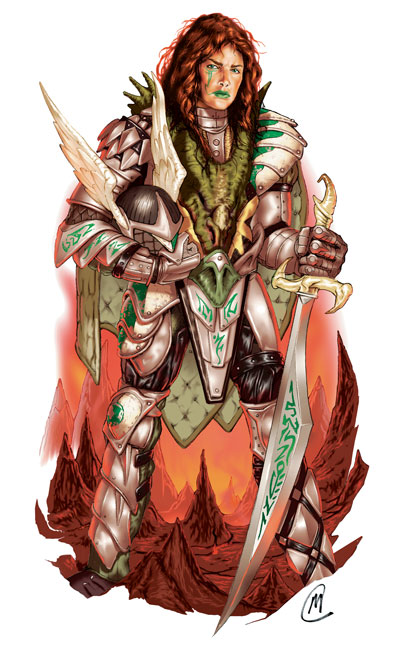

数百个世界的武士。血腥战争的佣兵首领。天界复仇之剑。位面骑士在位面间穿行，经常加入战争。她可能由于正义的任务加入战团，也可能只是出于对血腥的渴望，但至少她由于她的威力而使人胆寒。
所有的位面骑士在她进入这一进阶职业前，都以军事才能著称于世，那些倾向于使用武器技巧的职业更倾向于这个进阶职业。他们专精于与特定位面的原住民战斗，了解尽可能多的关于他们敌人的知识，以便击败他们。
非玩家角色（NPC）位面骑士总是在战斗、恢复战斗伤害或准备下一次的战斗。他们总是在人物中从一个位面到另一个位面以扩展他们的十字军。
生命色：D10
职业需求
为了成为一名位面骑士，角色必须满足以下所有要求。
基本攻击加值：+6
技能：知识（位面）4级
专长：武器专精
特殊要求：位面骑士在获得这个进阶职业前必须至少游历过除物质位面外的两个位面。想成为位面骑士的人并不一定要是这些旅行的发动者。
本职技能
位面骑士的本职技能有：攀爬（力量）、手艺（智力）、理解动物（魅力）、躲藏（敏捷）、威胁（魅力）、方向感（感知）、跳跃（力量）、知识（位面）（智力）、聆听（感知）、潜行（敏捷）、专业（感知）、骑术（敏捷）、搜索（智力）、语言（无）、侦查（感知）、游泳（力量）、绳技（敏捷）与乡野传奇（感知）。参见《玩家手册》第四章：技能察看相关描述。
每等级技能点数：4+智力调整值
职业特征
下列均为位面骑士进阶职业的职业特征。
擅长武器与防具：位面骑士擅长所有的简单与军用武器和所有的护甲与盾牌
偏好位面：位面骑士对特定位面的原住民有深入的研究。如果这些技能是针对那个位面的原住民，她在哄骗、聆听、察言观色、侦查与乡野传奇检定上得到+1的加值。同样，位面骑士在针对偏好位面的原住民攻击时，武器伤害色上也得到相同的加值。位面骑士在使用远程武器时，只有在30英尺内会得到伤害加值。这个加值不能应用在免疫重击的生物身上。
位面骑士只能选择一个偏好位面，即使是其他位面上的同种生物也不会受到影响。例如，如果一个位面骑士选择九层地狱作为偏好位面，她在对抗此位面的魔鬼原住民时会得到加值，但是对于来源于相邻位面修罗场中的恶魔则不能应用这个加值。
位面骑士的研究也会在非战斗部分给与她帮助。位面骑士在涉及到偏好位面的原住民时，交涉与收集信息检定得到+1的加值。当她在偏好位面上时，方向感会得到+1的加值。
位面骑士在第5级时得到第二个偏好位面，在第10级时获得第三个偏好位面。当得到新的偏好位面时，原先偏好位面的加值再+1。例如一个5级的位面骑士选择修罗场作为她的新偏好位面，以期得到对于这个位面的原住民+1的加值，这样它对于九层地狱原住民的加值也增加到+2。位面骑士不一定要选择她的原住位面作为偏好位面。
来源于这项能力的加值可以与巡林客的宿敌能力累加。一个游侠/位面骑士如果选择了魔鬼作为宿敌，九层地狱作为偏好位面，则在对抗九层地狱原住的魔鬼时将同时获得这两项加值。
识破隐形（超自然能力）：当达到2级以后，位面骑士得到随意识破隐形的能力，就如同5级术士施放的同名法术。这项能力将允许他看见（但不能影响到）灵界生物。
攻击灵界（超自然能力）：3级或更高的位面骑士可以随意将她的武器转变为物质力场效果，以使它可以攻击灵界中的生物。位面骑士起始或结束这项能力视为自由动作，但是只能应用于它所专精的近战武器上。如果位面骑士挥舞的是一把魔法武器，这项能力也会使她在攻击虚体生物时不会受到50%的失手几率影响。
位面生存（特异能力）：在第4级，位面骑士以和谐的与她旅行的位面的自然状态相处，它自身会对这些位面自然效果免疫。可以被防护位面效果法术取消的效果都会被这项能力取消。
位面骑士对于或元素位面“正常的”火焰免疫，但是火属性的攻击与为正常灼热的区域依然会影响到她。由于这项特异能力会造成她自己对某一位面和谐，位面骑士依然会对来自其他位面的同类型伤害攻击，这种攻击形态并不属于自然秩序的一部分。在其他位面，包括物质位面，火焰依然可以伤害到位面骑士。
幻化灵体（类法术能力）：6级或更高的位面骑士每天可以步入灵界3次。效果如同13级术士施展的幻化灵体法术。
撕开传送门（类法术能力）：每天一次，7级以上的位面骑士可以撕开一个星界通向其他存在位面的传送门。籍由这个处于他所在位面的洞，位面骑士可以在星界或她旅行过并且与星界相连的位面上打开一个传送门。就如同异界传送法术一样，位面骑士不能精确控制他要传送到的位面上的具体传送目的地。传送门看上去就像一个位面骑士周围空间中的粗糙的洞，在消失前，它能工作1D4+1轮。
击破传送门（类法术能力）：每天一次，8级或更高的位面骑士可以通过切断到目的地的连接封印一个次元门或传送门。她需要做一次检定来完成这项工作（DC= 5+传送门的施法者等级）。异界之门法术会如同被解除魔法摧毁，而传送门则会被压制1D6天。
伤害减免（超自然能力）：在第9级，位面骑士获得伤害减免20/+1。这意味着角色可以忽略前20点伤害，除非她被+1以上增强加值、被法术或能量形式（火、冷及其他）加持的武器伤害。这项能力不会与其他形式的伤害减免累加。
表 3-5：位面骑士
职业等级 基本攻击加值 强韧检定 反射检定 意志检定 特殊能力
1 +1 +2 +2 +0 偏好位面
2 +2 +3 +3 +0 识破隐形
3 +3 +3 +3 +1 攻击灵界
4 +4 +4 +4 +1 位面生存
5 +5 +4 +4 +1 偏好位面
6 +6 +5 +5 +2 同游灵界
7 +7 +5 +5 +2 撕开传送门
8 +8 +6 +6 +2 击破传送门
9 +9 +6 +6 +3 伤害减免20/+1
10 +10 +7 +7 +3 偏好位面